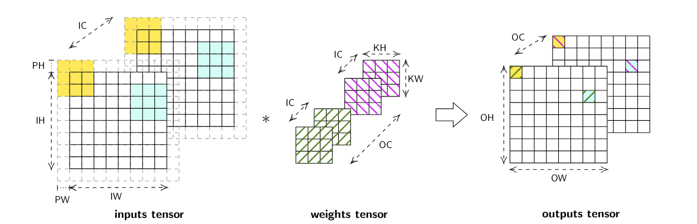
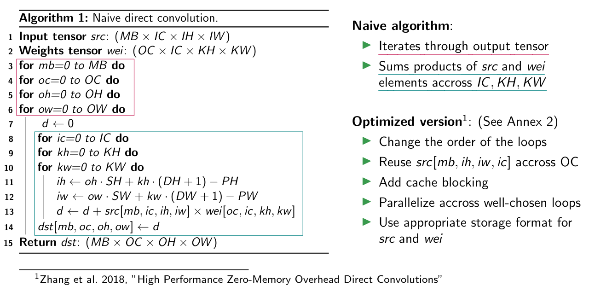
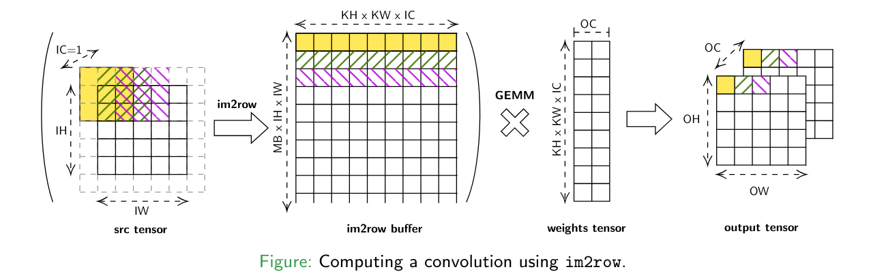
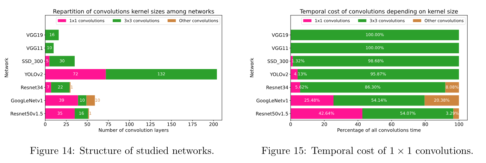
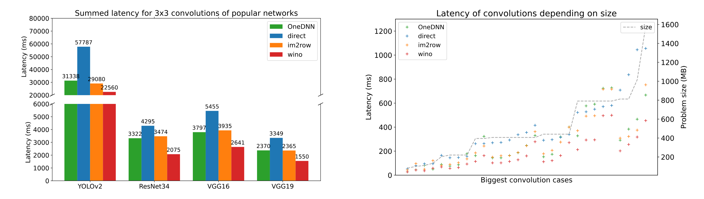

During my last year of Master's degree, I worked as a research intern for 6 weeks at LIP6 (Paris). I was intern in the ALSOC team, which works focus on embedded systems and designing efficient applications with good architecture-algorithm adequation.
The aim of my work was to study and compare State-of-the-Art approaches for computing deep learning convolutions. In particular, my work focused on popular embedded platforms representative of the market such as NVIDIA Jetson (Orin and Xavier), Mercury EM780 and Apple's M1 processor.
Convolutionnal Neural Networks (CNNs) has shown efficiency in computer vision tasks and are, in 2024, still holding State-of-the-Art accuracy for object detection tasks without using additionnal training data. Deep learning convolutions are the most important operation of these networks, so designing algorithms for high-performance convolutions has been widely studied in State-of-the-Art and several approaches were suggested.
Deep learning convolutions are computed on multi-dimensionnal tensors with the dimensions representing:
By using the previous notations, a basic convolution with no stride, padding or dilation can be described by the following formula:
The output of a convolution is a reduction through the dimensions IC, KH and KW of the products between overlapping parts of src and weights. This operation can be visualized in the following picture.

Note
Deep learning convolutions are multi-dimensionnal convolutions with filters (weights) that are updated at each backward pass.
State-of-the-Art provides several strategies for computing high-performance convolutions, but each paper claims that its approach is the best. Among SOTA strategies, we chose to study the following 4 approaches.
Direct methods references to all the methods that chose to implement the convolution operator following its mathematical definition, but with some high-level optimizations. This approach has the advantage to be straight forward and do not involve any memory overhead or data pre-processing.

Explicit GEMM methods (im2row) references to all the methods that uses an intermediate buffer in order to transform the convolution into a GEMM computation. These methods has the advantage to benefit from hardware-optimized GEMM implementations but involve a memory overhead to compute the intermediate buffer.

Implicit GEMM methods are relatively similar to explicit GEMM methods, but the intermediate buffer is never materialized and specific low-level kernels are used to speed-up the process. This design is the most used in GPUs, where efficient atomic kernels can be designed.
Winograd's method is based on Winograd's work on minimal filtering. It works in a similar way than Strassen's algorithm for matrix-multiplication: arithmetic intensity is reduced by re-formulating mathematical computations. In the implementation I benchmarked, the number of multiplications is divided by 2.25 compared to a naive implementation.
The main purpose of my work was to provide a fair comparison between previous approaches. In this context, I implemented previous strategies in a fork of OneDNN and I benchmarked the implementations with convolution setups corresponding to real-world networks thanks to benchDNN.
A first observation I made is that convolutions have a significant impact in the performance of almost any CNN. (see figure below) Indeed, most of the networks use these convolutions and they represent a major part of the compute time.

Another observation is that the implementations onednn (implicit GEMM) and winograd offer the best performance results. Moreover, im2row (explicit GEMM) is slightly slower than onednn and direct is almost always the slower implementation because its performance follows the size of the convolution inputs.

More details about my work, includin the experiments and explanations about the implementations are available in my internship report.
If you want to learn more about my work, here are some useful resources:
I am thankful to Alix Munier and Adrien Cassagne giving me the opportunity to work on such an interesting subject under their supervision.